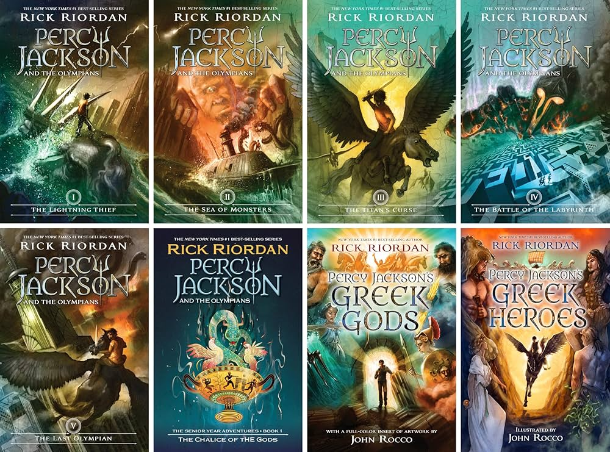
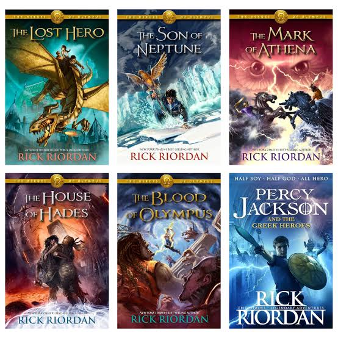
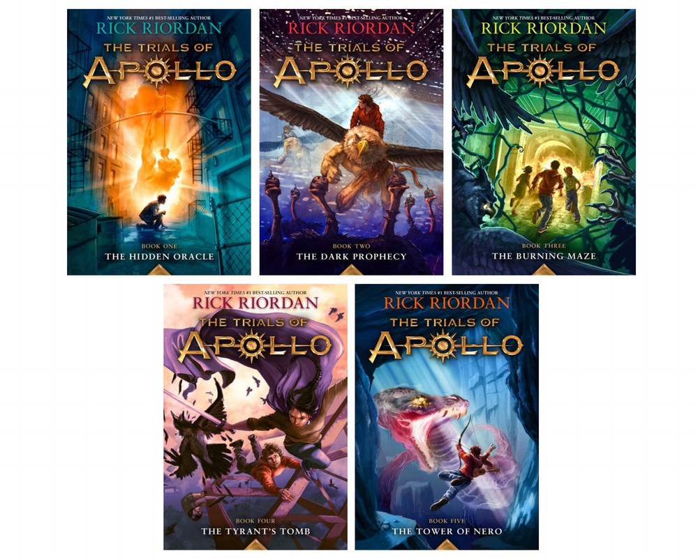

After reading these main 3 series, you can read any of these out of order!
- The Kane Chronicles
- Magnus Chase and the Gods of Asgard
- Camp Half-Blood Chronicles
- Demigods and Magicians
- The Nico Di Angelo Adventures
The Riordanverse is the name of the universe of different book series, all written by Rick Riordan.
These series are all related to either Greek, Roman, Norse, or Egyptian Mythology, with a modern twist.
From the first book in 2005 (The Lightning Thief) to now, the Riordanverse continues to grow by the year.
Although Rick Riordan is the main author for most of the books, he has also collaborated with certain authors for certain
books of his, such as the Nico Di Angelo Adventures.
Currently, Rick Riordan has partnered with Disney, and all of the books in the Riordanverse are published by Disney-Hyperion.
The Percy Jackson series, most notably, is currently being adapted into a show. It (currently) has 3 seasons!


